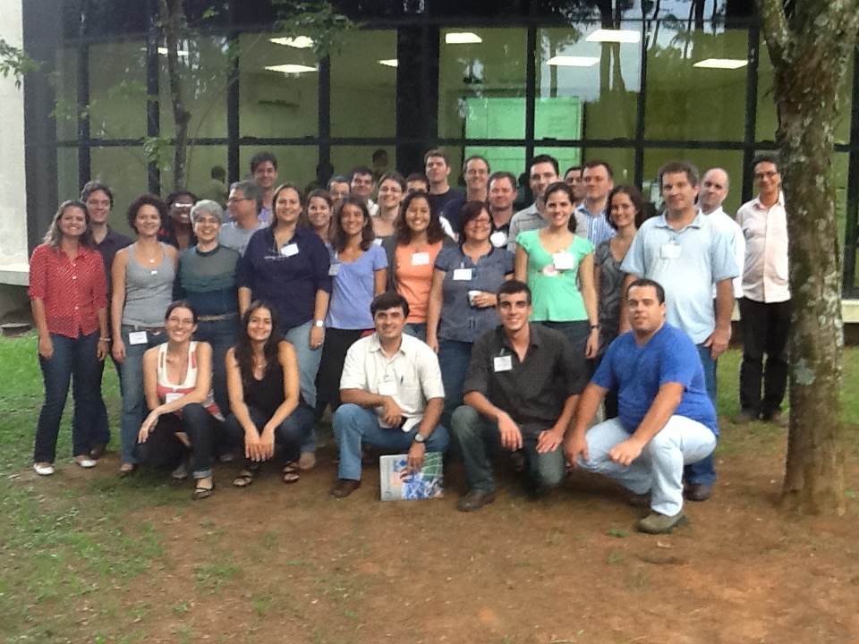

A Rede
Atualmente, a rede é composta de 11 instituições de pesquisa brasileiras, vários pesquisadores, alunos de pós-graduação e de graduação.
Instituições
Pesquisadores e Alunos
Programa de Computação Científica, Fundação Oswaldo Cruz (Fiocruz)
Escola de Matemática Aplicada, Fundação Getúlio Vargas
- Jair Koiller
- Flavio Codeco Coelho
- Moacyr Alvim Silva
- Crysttian Paixão
- Jayron Soares , PIBIC (2010-11)
Departamento de Física, Universidade Federal Fluminense
- Max Souza
- Leticia Oliveira Nunes , PIBIC (2011-12)
Departamento de Informática Médica (USP)
Laboratório TerraLab (UFOP, campus Ouro Preto)
- Tiago Carneiro
- Raquel Martins Lana , bolsista EXP-2
- Breno de Almeida Resende , PIBIC (2011-)
- Fernando Filipe dos Reis , PIBIC (2010-11)
Laboratório LEDS (UFOP, campus João Molevade)
- Tiago Lima
- Leandro Gomes da Silva , PIBIC (2013-)
Departamento de Física (UFLA)
- Iraziet Charret
- Alisson Luiz da Silva Lemos, PIBIC (2012-)
- Felipe da Cruz Rodrigues , PIBIC (2011-)
Departamento de Geoprocessamento (INPE)
Instituto de Matemática Pura e Aplicada
- Jorge Zubelli
- Nara Bobko
Universidade Estadual do Oeste do Paraná
- Rogerio Rizzi
- Reginaldo Zara
- Claudia Rizzi
- Andre Brun
- Bruno Eduardo Soares , PIBIC (2011-12)
- Diego Robles V Ribeiro, PIBIC(2010-12)
- Gabriel Sanches Silva, PIBIC (2013-)
- Gustavo Catarino da Costa, PIBIC (2012-)
Universidade Federal do Maranhão
- Aristófanes Correa Silva
- Anselmo Paiva
- Breno Reis do Nascimento , aluno PIBIC (2011-12)
Universidade Federal da Bahia